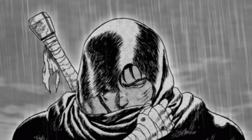

Deseas regresar a tu hogar. Añoras volver con tu gente a la que una vez tuviste que abandonar.
Haya sido por decisión propia o por la de ellos, terminaste exiliado de tu hogar, sin ninguna oportunidad de regresar.
Ahora vagas por el mundo, usando toda tu fuerza y poder para proteger a los menos afortunados del peligro cruel.
Cada muesca y magulladura en el dorso de tu hoja es una vida que no se extinguió gracias a tu ayuda.
Esas marcas en tu espada te recuerdan que, a pesar de haber perdido todo lo que deseabas proteger, sigues siendo un guardián.
Aún si te pierdes a ti mismo en el camino, seguirás peleando por guardar la paz y proteger a los inocentes. Hasta el fin del mundo…
